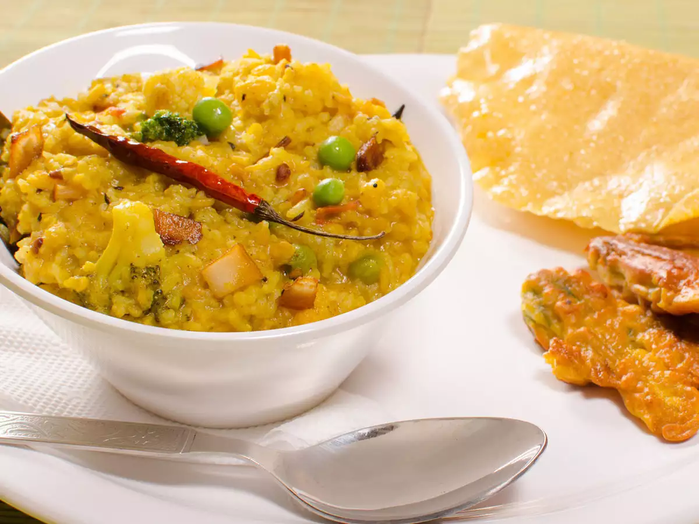
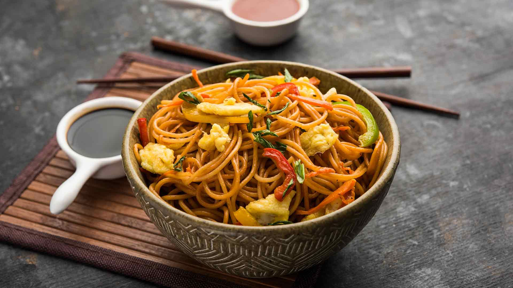
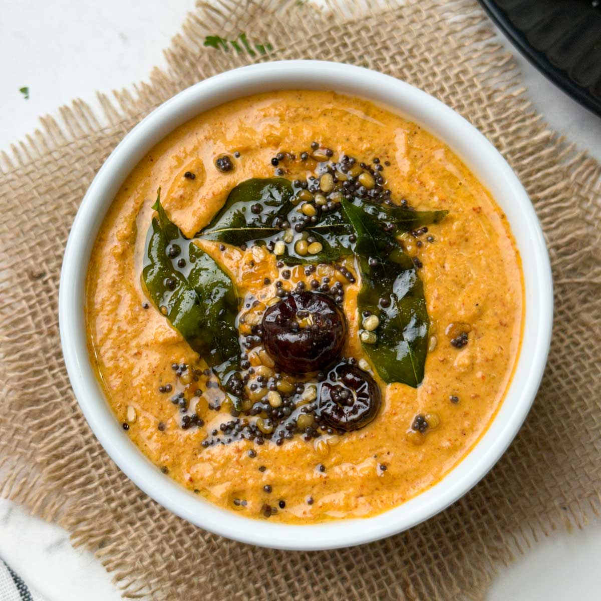
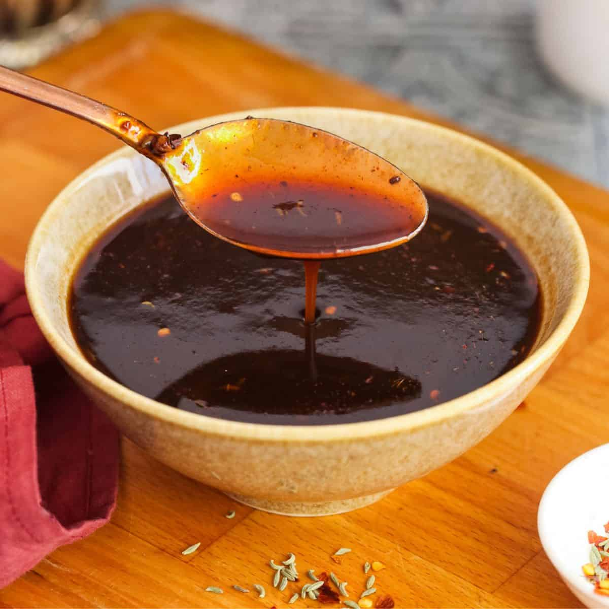

Index
🍕🍩Popular recipes For You to Watch and Make🥪🍟
1. Vegetable Biryani
Vegetable biryani usually contains yogurt-coated, spiced vegetables that are then layered between rice and steamed all together. A saffron liquid is poured over, then the dish is topped with caramelized red onions. Spices such as cinnamon sticks, bay leaves, and cloves will complement the dish too, which we've included in the recipe—but you can also choose your own adventure and use up what you have on hand.
Get the Vegetable Biryani Recipe
2. Papdi Chaat
Papdi chaat can take on many variations, but this particular version is a monster of a delight with two chutneys, tender potatoes and chickpeas, tangy yogurt, a medley of eye-catching red onions, pomegranate seeds, diced tomatoes, and finished with a generous snowing of crunchy sev noodles.

Get the Papdi Chaat Recipe
3. Mango Lassi
Like a cross between a milkshake and a smoothie, mango lassi is a simple pleasure: All you need is about equal amounts of sweet mangoes and creamy full-fat yogurt, a little ice, and a high-powered blender to force the two ingredients into one drinkable treat.
Get the Mango Lassi Recipe
4. Butter Chicken
Butter chicken is one of the most popular dishes at most Indian restaurants, and for good reason. This chicken recipe uses deeply flavored chicken thighs, simmered in an ultra-silky and aromatic sauce of tomatoes, cream, and cashews. Spoon this dish over steamed rice or serve with warm naan for the perfect dinner.
Get the Butter Chicken Recipe
5. Lentil Daal
The term dal refers to both this soup-like Indian dish and the word for split lentils. For this version, red lentils are simmered down in a tomato broth with lots of warm, bold spices. The spiced oil that gets drizzled over top is optional but highly encouraged (even if you don't love heat!). The yogurt will help balance out the spiciness and the acidity of the dish.

Get the Lentil Daal Recipe
6. Gobi Manchurian
The process for making gobi Manchurian is three-fold: The cauliflower is steamed until knife-tender, fried until crispy and golden, then coated in sauce. There are two main types of gobi Manchurian: dry and crispy, or served in gravy. This version walks the line: It's got sauce, but not drowning in it (perfect for pairing with rice).
Get the Gobi Manchurian Recipe
7. Aloo Gobi
Aloo gobi is a classic vegetarian Indian dish translating to potatoes (aloo) and cauliflower (gobi). It's a one-pot, super-simple, comforting dish that's ready quickly-serve it as a side or over rice as a main.
Get the Aloo Gobi Recipe
8. Khichdi
The most basic version of this South Asian dish (also known as kitchari) is made up of just rice, a pulse (like mung beans or lentils), turmeric, and salt, but the variations are endlessly diverse. Our version adds warming spices and garlic, ginger, and tomato, but feel free to make it your own.
Get the Khichdi Recipe
9. Aloo Masala Sandwich
Try this delicious sandwich recipe which would be loved by people of all ages. All you need to make this sandwich is bread slices, boiled potato, boiled peas, onion and a handful of spices. Fill the stuffing in bread slices and serve after grilling it or as it is.

Get the Aloo Masala Sandwich Recipe
10. Spicy Schezwan Noodles
If there is one thing that differentiates the schezwan from all the other varieties, it is the spice quotient of these noodles. This schezwan noodles recipe combines the heat of schehwan peppers, red peppers, black pepper powder and balances it off with tangy soy sauce and vinegar.
Get the Spicy Schezwan Noodles Recipe
💕Mom's Special💕
Curd and Peanut Chutney
Ingredients required: Peanut Chutney,curd, onion,tomato,salt
Procedure/steps:
1.Take roasted peanuts.
2.Add oil, red chillies, salt and cumin seeds in it.
3.Blend all the ingredients together in a mixer.
4.Your peanut chutney is ready.
5.Now Add peanut chutney to curd and mix it well
6.Add some chopped onion and tomato to it.
7.Add salt to taste
8.Give tadka to it
Your chutney is now ready to eat.You can eat this chutney with roti
Tamarind Chutney
Ingredients required: Green tamarind,green chillies,oil, jaggery, turmeric,salt
Procedure/steps:
1.Steam green tamarind and green chillies with oil.
2.Wait for steamed tamarind and green chillies get cool.
3.Then add jaggery, turmeric and salt to it.
4..Mash all the ingredients.
5.Give tadka to it
Your Tamarind Chutney is now ready to eat
Frankie
Ingredients required: Cabbage,carrots,
Procedure/steps:
1.Steam green tamarind and green chillies with oil.
2.Wait for steamed tamarind and green chillies get cool.
3.Then add jaggery, turmeric and salt to it.
4..Mash all the ingredients.
5.Give tadka to it
Your Tamarind Chutney is now ready to eat